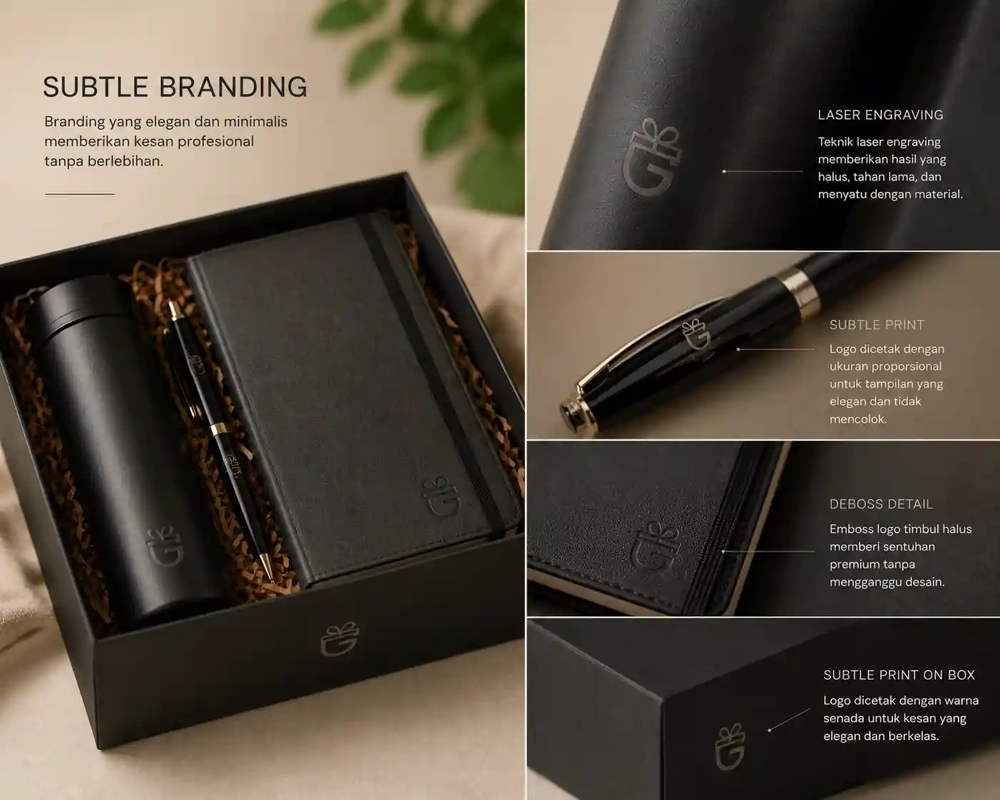

1. Evolusi Merchandise Perusahaan
Membagikan barang promosi atau merchandise adalah taktik pemasaran klasik yang sudah digunakan sejak puluhan tahun lalu. Namun, lanskap brand awareness saat ini telah berubah secara drastis. Konsumen modern dan klien B2B (Business-to-Business) tidak lagi terkesan dengan pulpen plastik murah atau gantungan kunci yang dicetak logo besar-besar.
Saat ini, merchandise berfungsi sebagai ekstensi dari kualitas merek (brand quality extension). Kualitas produk fisik yang Anda berikan merepresentasikan kualitas layanan atau produk yang Anda tawarkan kepada mereka.
2. Psikologi di Balik Merchandise Eksklusif
Mengapa perusahaan bersedia mengeluarkan anggaran lebih untuk sebuah premium gift? Jawabannya ada pada prinsip psikologi timbal balik (reciprocity). Ketika seseorang menerima barang yang bernilai tinggi, indah, dan berguna, mereka secara bawah sadar akan merasa lebih positif terhadap pihak pemberi.
Merchandise eksklusif—seperti jaket premium, powerbank wireless, atau tas laptop kulit—tidak akan dibuang. Barang-barang ini akan dipertahankan, dibawa, dan digunakan. Hal inilah yang mengubah penerima hadiah menjadi brand ambassador tidak langsung bagi perusahaan Anda.
3. Seni Penempatan Logo (Subtle Branding)
Salah satu kesalahan terbesar dalam mendesain suvenir korporat adalah menjadikan barang tersebut sebagai papan iklan berjalan. Ingat aturan emas ini: Orang menyukai barang gratis, tapi mereka benci dijadikan alat promosi yang mencolok.
Strategi terbaik adalah Subtle Branding. Daripada mencetak logo dengan warna-warni terang di tengah dada sebuah jaket, lebih baik meletakkan logo kecil dengan teknik bordir (embroidery) senada dengan warna kain di bagian ujung lengan atau belakang leher. Pada produk kulit, gunakan teknik blind deboss (cetak tenggelam tanpa warna) alih-alih sablon putih yang merusak estetika bahan kulit.

4. Menciptakan Organic Reach Melalui Fungsionalitas
Agar merek Anda mendapatkan paparan (exposure) yang maksimal, pilihlah barang yang sering digunakan di tempat umum. Sebuah buku catatan kulit premium akan dibawa klien Anda ke rapat-rapat penting dengan pihak lain. Sebuah payung berdesain elegan akan dibuka di jalanan yang sibuk. Sebuah smart tumbler akan diletakkan di atas meja kafe yang ramai.
Setiap kali barang tersebut dilihat oleh orang lain, terciptalah paparan organik (organic reach). Barang yang fungsional memastikan logo Anda terus berinteraksi dengan dunia luar.
5. Mengukur Dampak Jangka Panjang (ROI)
Berbeda dengan iklan digital (ads) yang tayangannya berhenti seketika saat anggaran habis, Return on Investment (ROI) dari merchandise eksklusif bersifat jangka panjang. Sebuah tas ransel laptop berkualitas tinggi bisa bertahan hingga 3-5 tahun. Selama jangka waktu tersebut, merek Anda terus mendapatkan brand recall setiap kali klien menggunakannya.
6. Kesimpulan
Merchandise bukan sekadar soal menempelkan logo pada sebuah barang. Ini adalah tentang memberikan nilai (value). Strategi meningkatkan brand awareness yang paling jitu adalah dengan memilih barang yang eksklusif, berguna, dan menerapkan desain logo yang elegan. Dengan begitu, Anda tidak hanya mempromosikan nama perusahaan, tetapi juga mengukuhkan citra perusahaan sebagai entitas yang premium, perhatian, dan profesional.